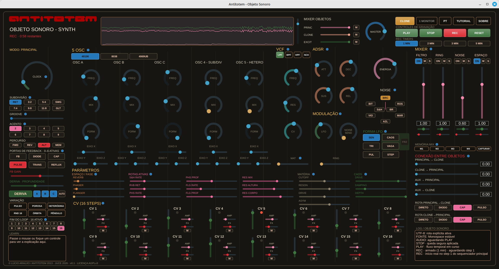

Concept
Antitotem est un instrument sonore autonome : téléchargez-le et utilisez-le pour composer, performer et enregistrer de la musique — cinq oscillateurs, un séquenceur, un filtre, des effets et une capture audio/MIDI/MusicXML dans un seul objet. Sa forme actuelle cherche à garder les éléments de son origine : né comme installation urbaine de consoles dédiées, il porte dans son ADN un savoir issu de l'électronique artisanale.
L'instrument aujourd'hui
Antitotem est un instrument JUCE/C++20 multiplateforme — disponible pour Linux (paquet
.deb), Windows (installeur
.exe) et macOS (.dmg), en plus de la compilation depuis les
sources. Ce n'est pas un plugin et il ne dépend d'aucun DAW : il s'ouvre, sonne et enregistre
seul.
On peut composer une pièce entière avec lui : cinq oscillateurs (continus, sub/horloge divisée et hétérodyne), un scanner 16 pas, ADSR, VCF multimode, bruits et sample & hold, retours (reverb/phaser/flanger/résonateur), un mixeur avec mémoire, une dérive générative, un oscilloscope L/R permanent, et un enregistrement direct en WAV, MIDI et MusicXML — la pièce sort prête à être réécoutée, éditée dans un DAW, ou ouverte comme partition.

Caractéristiques
Quatre traits définissaient les consoles urbaines de 2012-2013. Ils n'ont pas été remplacés — ils nourrissent le concept du nouvel objet sonore, traduits pour un instrument qui tient sur un ordinateur portable plutôt que dans un caisson de rue.
Objet sonore urbain
« Cinq objets sonores distincts, distribués dans les flux de la ville, pas sur une scène fermée. »
Aujourd'hui : toujours un objet sonore autonome, pas un plugin — il s'ouvre et sonne aussitôt, enregistre sa propre sortie, ne dépend d'aucun hôte ni d'aucun DAW pour exister.
Perception de l'espace
« Suggère d'autres chemins, signale les environs, active la perception de la matérialité du lieu habité ou parcouru. »
Aujourd'hui : la DÉRIVE déplace les paramètres seule, dans des limites conçues — jamais un hasard aveugle — et la chaîne ESPACE traite largeur et panoramique comme un lieu à parcourir, pas un effet figé.
Présence et absence
« Établit une présence par le son, comble des vides, met en évidence l'absence — crée un dialogue plutôt qu'un simple signal. »
Aujourd'hui : un oscilloscope L/R permanent à l'écran et un mixeur avec connexion entre objets — l'instrument montre toujours ce qui sonne vraiment, pas seulement ce qui a été programmé.
Technologie réinventée
« Réinvente des technologies qui permettent l'interactivité et élargissent les dynamiques spatio-temporelles, pas une technologie toute faite. »
Aujourd'hui : le caractère des puces CMOS/discrètes originales (40106, 8038, 4069UB) a été réécrit en code — pas une émulation, une réinvention du même élan, maintenant en logiciel libre que n'importe qui peut télécharger et jouer.
ADN — d'où ça vient
Antitotem est né comme une œuvre d'art sonore pour l'espace urbain — des consoles électroniques dédiées, installées à des points stratégiques de la ville, pas un instrument de studio.
-
2012
Sélectionné dans l'appel à recherche et production en art numérique nº 090/12 de la Fundação Cultural de Curitiba (Fondation Culturelle de Curitiba), avec le soutien de la Mairie de Curitiba et du Fonds Municipal de Culture.
-
2013
Cinq consoles matérielles auctoriales, modulaires, CMOS/discrètes ont été construites, chacune installée à un point différent de la ville — avec exposition, atelier et documentation vidéo des immersions et site web.
-
2026
Nouvelle phase : un instrument numérique, inspiré de la pratique matérielle des consoles originales, sans remplacer ni déplacer le fonds historique — désormais tourné vers la création musicale et la performance.
Le site original du projet, avec l'exposition, l'atelier et les archives des immersions à travers la ville, reste en ligne à antitotem.arquiviagem.net.
Crédits
Lúcio Araújo — conception, DSP, interface et tout le code de ce prototype. Construit sur le framework JUCE (dépendance double licence AGPLv3/commerciale ; ce projet utilise la voie AGPLv3), sous licence AGPLv3 (voir LICENSE). Les schémas et images de recherche cités dans la liste complète gardent leurs propres droits et ne sont pas distribués avec ce dépôt — voir la liste complète des sources et références techniques.
Contact
Lúcio Araújo — auctorialité et développement.